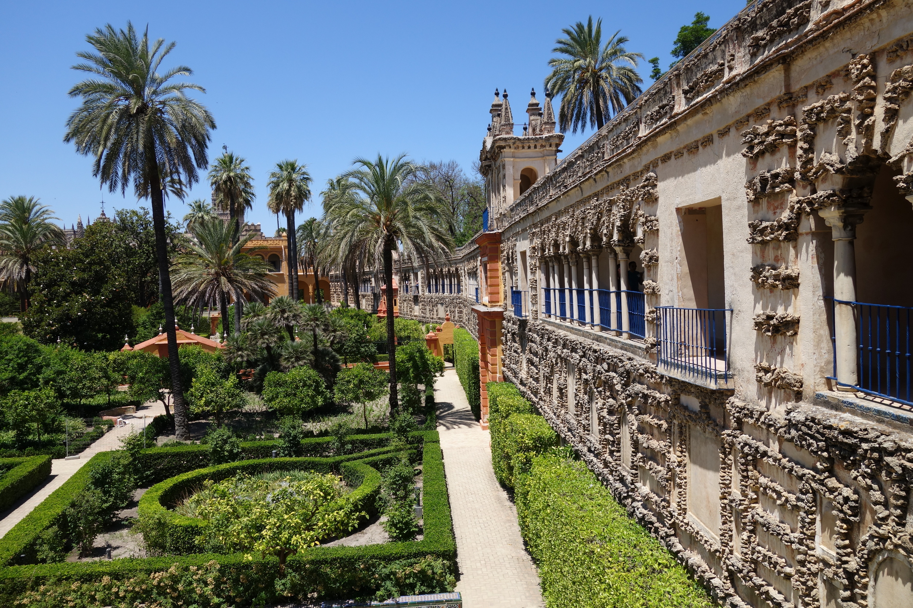
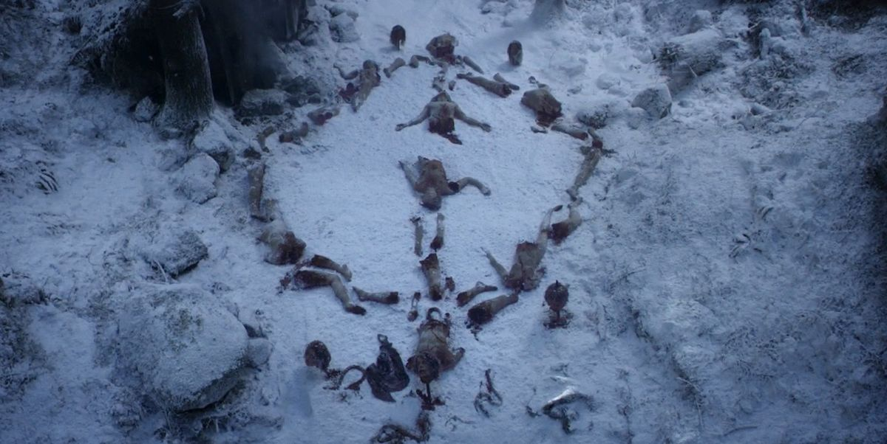
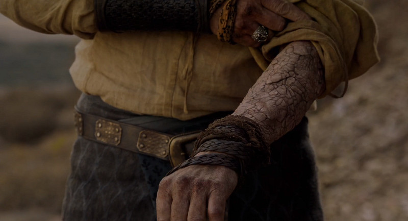

Dorne se Convirtió en el Destino Turístico de Invierno Preferido en
2024
En enero de 2024,
Dorne, la región más meridional de Poniente, se ha convertido en el
epicentro del turismo de invierno, atrayendo a viajeros de todo el mundo con su clima cálido y
soleado, en contraste con las bajas temperaturas que azotan al resto
del continente. Este destino, famoso entre los aficionados de "Juego
de Tronos", ofrece una experiencia inigualable con su rica cultura,
historia y paisajes impresionantes.
La capital, Lanza del Sol,
es el corazón vibrante de Dorne, donde los visitantes son recibidos
con una atmósfera festiva perpetua. Los jardines del Agua se presentan
como un oasis en el desierto, proporcionando un refugio sereno con sus
ingeniosas obras de arte acuático. Los tours por el Palacio de los
Martell revelan secretos de antiguas intrigas y amores legendarios,
capturando la esencia de las crónicas de George R.R. Martin.

Gran clima en enero
El turismo masivo ha sido impulsado no solo por la belleza y la
cultura de Dorne, sino también por sus condiciones climáticas
excepcionales durante este invierno. Con temperaturas que invitan a la
exploración y el relax, los visitantes pueden disfrutar de actividades
al aire libre sin las restricciones del frío que prevalece en otras
regiones. Desde el desafiante Paso del Príncipe hasta las prístinas
playas de la costa, Dorne ofrece un escape perfecto a la rutina
invernal.
La gastronomía local, con su énfasis en frutas frescas, mariscos y
especias únicas, se ha convertido en otra de las grandes atracciones.
Los restaurantes y mercados de Dorne están llenos de visitantes
ansiosos por probar los platos tradicionales y los vinos especiados,
reconocidos por su capacidad para calentar el espíritu en cualquier
temporada.
Ante la creciente demanda, Dorne ha visto un rápido desarrollo de
infraestructuras turísticas, incluyendo alojamientos que van desde
hoteles de lujo hasta posadas temáticas inspiradas en "Juego de
Tronos". Las experiencias inmersivas, como recorridos que siguen los
pasos de personajes icónicos como Oberyn Martell, complementan la
oferta, haciendo de Dorne el destino ideal para los seguidores de la
saga y viajeros en busca de aventuras cálidas en pleno invierno.
Repunte de Crímenes en las Islas del Hierro: Un Análisis de las Causas
Subyacentes
Las Islas del Hierro, conocidas por su feroz independencia y
tradiciones marítimas ancestrales, están experimentando un alarmante
aumento en la incidencia de crímenes. Este repunte, que ha sorprendido
tanto a los habitantes locales como a observadores externos, plantea
serias preguntas sobre las causas subyacentes y las posibles
soluciones a este fenómeno.
La raíz de este aumento delictivo puede rastrearse hasta una
combinación de factores económicos, sociales y políticos. En primer
lugar, las Islas del Hierro han sufrido históricamente de un
aislamiento económico, dependiendo casi exclusivamente de la pesca y
las incursiones para sustentar su economía. La disminución de las
poblaciones de peces y el endurecimiento de las leyes internacionales
contra la piratería han empujado a muchos a la desesperación
económica, lo que, a su vez, ha incrementado los índices de robo y
violencia.
Además, la fuerte tradición de las Islas del Hierro de "pagar el
precio del hierro", que glorifica la adquisición de bienes a través
del conflicto, puede haber exacerbado la situación. Este ethos
cultural, aunque profundamente arraigado en la identidad de las islas,
puede estar en desacuerdo con las normas modernas y contribuir a la
justificación del crimen como medio de vida.
Más allá de la cultura
La política también juega un papel crucial. La reciente inestabilidad
en el Trono de Hierro ha llevado a un vacío de poder que ha sido
rápidamente explotado por figuras criminales. La falta de una
autoridad central fuerte ha permitido que bandas y piratas operen con
impunidad, socavando la seguridad y el orden públicos.

La respuesta de las autoridades locales ha sido insuficiente ante la
magnitud del problema. Aunque se han realizado esfuerzos para aumentar
la presencia de guardias y mejorar las comunicaciones entre las islas,
estos han sido esporádicos y descoordinados. La difícil geografía de
las Islas del Hierro, con sus numerosos islotes y calas escondidas,
complica aún más la aplicación de la ley.
Los expertos sugieren que una solución efectiva requerirá un enfoque
multifacético. Esto incluiría medidas para revitalizar la economía
local a través de la diversificación y la inversión en sectores
sostenibles, como el turismo o la energía renovable. Paralelamente,
una reforma cultural que promueva valores alternativos al "precio del
hierro", enfocándose en la comunidad y la cooperación, podría ayudar a
mitigar la glorificación del crimen. Finalmente, la estabilización
política de las Islas del Hierro y el establecimiento de un gobierno
central fuerte y justo parecen ser cruciales para restablecer el
orden. La cooperación con otras regiones de Poniente para combatir la
piratería y el crimen organizado también será vital para asegurar un
futuro pacífico para las islas.
Miedo e Incertidumbre se Apoderan de Poniente ante Rumores de la
Llegada de Caminantes Blancos
Poniente se encuentra sumido en un estado de alarma y temor crecientes
ante los recientes rumores sobre la posible llegada de Caminantes
Blancos, seres legendarios cuya existencia se creía relegada a los
cuentos para asustar a los niños. Los informes, provenientes de
múltiples fuentes a lo largo de la Guardia de la Noche, mencionan
"indicios preocupantes" en las regiones más septentrionales, más allá
del Muro.

El indicio más alarmante ha sido el descubrimiento de varios animales
salvajes y, en algunos casos, patrullas de la Guardia de la Noche,
encontrados congelados en circunstancias misteriosas, sin signos
aparentes de heridas físicas. Este fenómeno, desconocido hasta ahora
en la historia reciente de Poniente, ha llevado a muchos a temer lo
peor. Los cuerpos congelados, que parecen haber sido víctimas de un
frío sobrenatural, han sido interpretados por algunos como una clara
señal de la aproximación de los Caminantes Blancos.
Un terror justificado
La incertidumbre se ha visto alimentada por la creciente frecuencia de
tormentas de nieve inexplicables y descensos drásticos de temperatura
en áreas cercanas al Muro, condiciones que, según las antiguas
leyendas, preceden a la marcha de los Caminantes. Estos eventos
climáticos anómalos han afectado la vida cotidiana, interrumpiendo el
comercio y la comunicación entre las regiones septentrionales y el
resto del reino. Las autoridades de Poniente han emitido llamados a la
calma, instando a la población a no sucumbir al pánico. Sin embargo,
la confianza en tales declaraciones se ve socavada por el creciente
número de testimonios de testigos y los esfuerzos visibles de la
Guardia de la Noche por reforzar el Muro y aumentar sus filas.
Respuesta inminente
Líderes de varias casas nobles han comenzado a tomar medidas
independientes, fortificando sus castillos y acumulando provisiones,
en preparación para lo que muchos ven como una amenaza inminente.
Paralelamente, hay un resurgimiento en el interés por antiguas
prácticas y símbolos mágicos considerados protectores contra los
Caminantes Blancos, evidenciando un retorno a las supersticiones de
eras pasadas. La situación ha llevado a una atmósfera de miedo e
incertidumbre que permea todos los estratos de la sociedad de
Poniente. La posibilidad de enfrentar una amenaza contra la cual las
estrategias convencionales de guerra parecen inútiles ha llevado a
muchos a cuestionar no solo su seguridad, sino también las antiguas
divisiones y conflictos que han caracterizado la política de los Siete
Reinos.
A medida que los rumores continúan esparciéndose, la pregunta en la
mente de todos es si Poniente podrá unirse frente a una amenaza común
o si las antiguas leyendas se convertirán en una terrorífica realidad.
La esperanza de muchos reside en la posibilidad de que estos signos
sean simplemente anomalías naturales; sin embargo, la preparación para
lo peor parece ser el curso de acción predominante en estos tiempos
inciertos.
Descubrimiento Revolucionario en la Ciudadela: Un Nuevo Compuesto para
Tratar la Psoariagrís

En un desarrollo que podría cambiar el curso del tratamiento de
enfermedades en Poniente, curanderos y maestres de la Ciudadela han
anunciado el descubrimiento de un
nuevo compuesto prometedor en la lucha contra la Psoariagrís, una enfermedad que hasta ahora había sido considerada incurable y
condenaba a sus víctimas al ostracismo y a una muerte lenta. El
compuesto, al que temporalmente se ha denominado
"Sylpharion" por sus descubridores, se deriva de una
planta rara encontrada en las profundidades de los bosques de las
Islas del Verano. La planta, conocida por los nativos como "Hoja de
Fuego", había sido utilizada en medicinas tradicionales locales para
tratar una variedad de afecciones cutáneas, pero su potencial contra
la Psoariagrís había permanecido oculto hasta ahora.
El descubrimiento
La investigación comenzó cuando un joven maestre, enviado a las Islas
del Verano en una misión de estudio botánico, observó la utilización
de la "Hoja de Fuego" en rituales de curación. Intrigado por sus
efectos, recolectó muestras y las envió a la Ciudadela para un
análisis más detallado. Tras meses de estudio y experimentación, el
equipo liderado por el eminente Archimaestre Ebrose logró aislar el
compuesto activo responsable de los efectos curativos. Los ensayos
clínicos iniciales, realizados en sujetos afectados por formas
tempranas de Psoariagrís, han mostrado resultados prometedores. Los
pacientes tratados con Sylpharion experimentaron una regresión
significativa de los síntomas, incluyendo la reducción del
engrosamiento de la piel y la desaparición de las placas grisáceas
características de la enfermedad. Aún más impresionante, el compuesto
parece prevenir la progresión de la enfermedad a sus etapas más
debilitantes.
Un futuro esperanzador
El mecanismo de acción de Sylpharion es aún objeto de
estudio, pero los investigadores creen que
interfiere con el proceso patológico de la Psoariagrís a nivel
celular, impidiendo la proliferación anormal de las células de la
piel y fomentando su regeneración normal.
Este descubrimiento no solo abre la puerta a un tratamiento efectivo
para la Psoariagrís, sino que también podría tener implicaciones para
el tratamiento de otras enfermedades dermatológicas.
La Ciudadela ha solicitado el apoyo de varias casas nobles y de la
Corona para iniciar una producción a mayor escala de Sylpharion.
Además, se está planificando una expedición a las Islas del Verano
para estudiar más a fondo la "Hoja de Fuego" y asegurar una fuente
sostenible del compuesto. Este descubrimiento representa un rayo de
esperanza para aquellos afectados por la Psoariagrís, que hasta ahora
habían enfrentado un futuro incierto y a menudo, un destino cruel.
También reafirma el papel vital de la Ciudadela y sus maestres en el
avance del conocimiento médico en Poniente, prometiendo una nueva era
en el tratamiento de enfermedades que una vez se consideraron una
sentencia de muerte.
Mineros de Roca Casterly Alzan la Voz ante Condiciones Laborales
Inhumanas
En el opulento esplendor de las Tierras del Oeste, las Minas de Oro de
Roca Casterly representan una fuente de inmensa riqueza y poder para
la Casa Lannister, una de las familias más influyentes de Poniente.
Sin embargo, bajo el brillo dorado que ha cimentado el legado y la
influencia de esta gran casa, se esconde una realidad sombría
enfrentada diariamente por los mineros que extraen este precioso
metal. Los trabajadores de las minas han comenzado a denunciar
condiciones de trabajo extremadamente peligrosas y deshumanizantes.
Las jornadas laborales extenuantes, la falta de medidas de seguridad
adecuadas, y una remuneración que apenas alcanza para cubrir las
necesidades básicas son solo algunas de las penurias que han salido a
la luz. Estas denuncias han sacudido a la sociedad de Poniente,
acostumbrada a admirar la riqueza de los Lannister sin cuestionar su
procedencia.
Condiciones Laborales Precarias
Los mineros describen un entorno laboral en el que el riesgo de derrumbes y
accidentes es constante. La ventilación inadecuada en los túneles profundos hace que el aire sea irrespirable, y la exposición prolongada al polvo de oro y otros minerales ha llevado a enfermedades respiratorias crónicas entre muchos trabajadores. Pese a estos riesgos, se reporta que el equipo de protección personal es escaso o, en muchos casos, inexistente.
Jornadas Extenuantes Sin Recompensa Justa
Las jornadas de trabajo en Roca Casterly son brutalmente largas, con mineros
que dedican gran parte de su día y noche en la oscuridad de las minas, lejos
de sus familias y seres queridos. A pesar de la riqueza que generan, su compensación
no refleja la importancia de su trabajo, ni los peligros a los que se enfrentan diariamente.
Llamados a la Acción
Esta situación ha llevado a un creciente descontento entre los trabajadores,
quienes exigen mejoras significativas en las condiciones laborales, incluyendo
salarios justos, medidas de seguridad adecuadas, y horarios de trabajo razonables.
La respuesta de la Casa Lannister a estas demandas aún está por verse, pero el malestar
entre los mineros sugiere que la situación podría escalar si no se toman medidas concretas.
Propuestas de los mineros
- Iniciativas de Seguridad: Propuestas de mejora en las medidas de seguridad dentro de las minas, incluyendo formación regular sobre riesgos laborales.
- Programas de Salud: Implementación de programas de salud para detectar y tratar precozmente las enfermedades relacionadas con la minería.
- Economía Sostenible: Desarrollo de alternativas económicas para reducir la dependencia exclusiva de la minería en la región.
- Diálogo con los Lannister: Establecimiento de canales de diálogo directo entre los trabajadores y representantes de la Casa Lannister para negociar mejoras laborales.
- Compensaciones Justas: Revisión y ajuste de los salarios y beneficios para asegurar una compensación justa por el trabajo realizado.
- Mejora del Equipamiento: Inversión en equipamiento moderno y seguro para minimizar los riesgos en el lugar de trabajo.